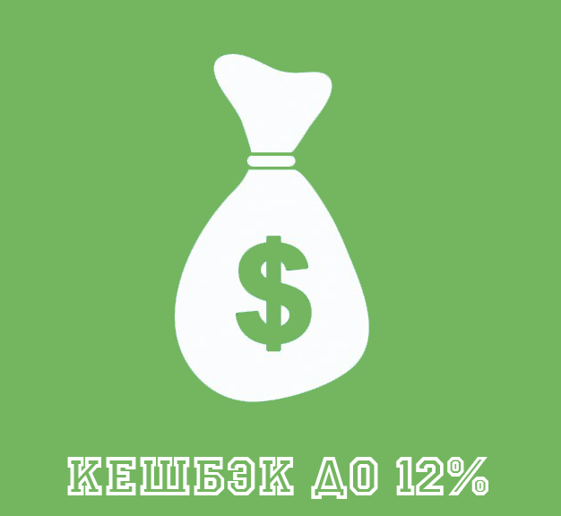

Карта «Тройка» – транспортная карта
Маленькая карта
БОЛЬШИЕ ВОЗМОЖНОСТИ
- Экономия на оплате проезда.
- Удобство использования – карта не портится,
не занимает много места, средства на ней хранятся до 5 лет.
- Практичность – одним билетом можно оплачивать
проезд в любом городском транспорте.
- Бесплатное использование – залог за карту составляет 50 рублей,
которые возвращаются в любой момент.
ПРЕИМУЩЕСТВА КАРТЫ

Начисление процентов после каждого
пополнения счета. Выплата процентов
ежемесячно.
Единый проездной билет на все виды
транспорта г. Москвы.
Удобство оплаты – пополнить счет
можно любым удобным способом:
через терминал, в кассе метрополитена,
с банковской карты через интернет, с помощью
мобильного приложения, через СМС.
Подарок: месяц поездок бесплатно.
Карта «Тройка» — это электронная транспортная карта города Москвы с возможностью пополнения и использования на любом виде общественного транспорта.
Изначально была представлена в виде пластиковой карты синего цвета с изображением трех белых коней, либо с другим изображением, приуроченным к какому-либо празднику или событию.
Существуют альтернативные «карты» в виде брелоков, браслетов, колец, а так же виртуальных мобильных карт с системой оплаты посредством